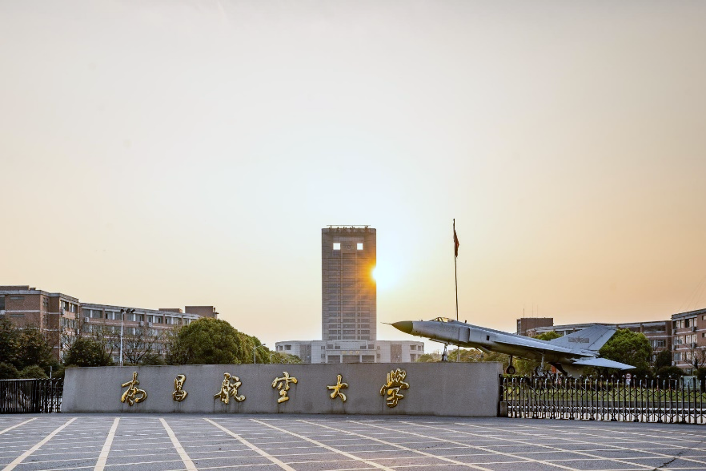
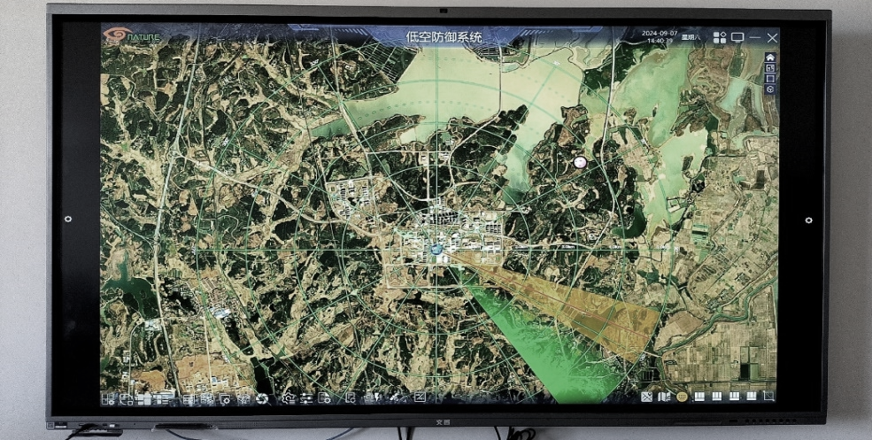

导读 本文面向公安、园区及高校安保管理部门，以南昌航空大学区域低空防护为样本，复盘固定式设施如何同时承担值守任务与产学研迭代，以及「一攻一防」实验室模式如何支撑长期能力建设。
导语：校园低空，既要守得住，也要长得出
航空类高校的空域与科研活动更活跃，低空安全不只是「不准飞」，还要服务教学科研与区域防护。临时加几台设备，可以应付一阵；要形成可验证、可迭代的能力，必须换思路。
固定设施怎么建？指挥中枢能不能把探测到处置串起来？防护现场能不能同时变成研发测试场？校企之间怎样既竞争又合作？
南昌航空大学给出的答案是两条线并行：一条是固定式区域防护设施，以指挥导调为中枢跑通「察-控-反」；另一条是共建「无人机反制实验室」，与学校原有「无人机研究所」形成「一攻一防」。

南昌航空大学 · 区域低空防护部署地（公开材料）
一 场景挑战：为什么校园防护不能只靠「临时顶一下」？
高校区域低空治理，难在目标复合、任务复合。
• 第一，空域用途多样。教学演示、科研试飞、航拍记录与外围误闯可能并存，看不见、辨不清，就容易误处置或漏处置。
• 第二，防护要连续。校园不是三天两头的临时活动，更适合固定式值守，而不是每次靠车载临时展开。
• 第三，能力要迭代。反无人机技术变化快，若现场只做值守、不做验证，装备与算法很难持续升级。
因此，南昌航大案例的关键不是「装了多少设备」，而是：能不能建成一套既守得住、又能支撑研发测试的固定能力。
校园低空治理，短期靠值守，长期靠可迭代的体系。
二 固定式设施：指挥导调为中枢，跑通「察-控-反」
第一条能力轴，是固定式设施体系。
现场以指挥导调为核心中枢，依托反制设备与辅助设备、配套软件协同，实现从目标探测识别到干扰处置的完整闭环。公开材料将其概括为「察-控-反」：先看见，再研判定级，再实施可控处置。

固定式指挥导调中枢 · 态势监控大屏（公开材料）
这套体系首先服务区域防护——让校园及相关空域有持续态势与处置能力。更重要的是，它同时为反无人机技术的研发、性能测试与实战验证提供全流程专业化支撑：实验室里测得通的算法与装备，可以放到真实空域条件下检验，再反馈改进。
固定式中枢的价值，是把日常值守与能力验证放在同一套设施上。

固定式反制设备阵列 · 架设值守（公开材料）
三 无人机反制实验室：一攻一防，产学研协同
第二条能力轴，是产学研协同创新。
羽嘉科技与南昌航空大学共建「无人机反制实验室」，对接学校现有「无人机研究所」，共同围绕探测、识别、跟踪、决策与反制等核心问题开展技术竞争与合作。一边研究「怎么飞得更好」，一边研究「怎么拦得住」，形成「一攻一防」的对照与互促。
这种模式的直接好处有三：一是问题来自真实场景，研发不空转；二是攻防双方同场迭代，技术进步更快；三是为行业培养既懂飞行、又懂防护的复合人才。
产学研要出成果，最好的土壤往往是真实防护现场，而不是封闭演示厅。
四 从校园样本到行业启示：闭环与迭代要一起抓
南昌航大样本对城市与园区低空治理同样有启发。
固定式设施适合需要长期值守的区域；车载一体化适合大型活动与临时主会场。两者并不对立。更关键的是：无论固定还是机动，都要把感知、研判、处置与复盘串起来。

察 · 控 · 打 · 评：把日常值守与能力迭代串成闭环
行业里常把完整链条写作「察 · 控 · 打 · 评」。羽嘉科技「猎场一号」警用低空防务智能实战平台，正是把闭环做成可调度的业务系统：兼容主流侦测反制设备，既能支撑重大活动与要地场景，也能与高校、实验室类固定部署协同，让值守数据回流到能力迭代。
守得住今天的空域，还要长得出明天的能力——这才是可持续的低空安全建设。
结 值守是底线，迭代是后劲
南昌航空大学区域低空防护给出的启示很清楚。
• 第一，高校与园区类场景更适合固定式指挥导调中枢，把「察-控-反」做成日常能力。
• 第二，防护设施同时承担研发测试与实战验证，才能避免「建完即停摆」。
• 第三，「一攻一防」实验室把飞行研究与反制研究放在同一生态里，是产学研真正能持续出成果的路径。
从文化节、博览会、国际盛会、高原演练到高校样本，场景不同，逻辑一致：看得见、管得住、过程可评，并且能力能迭代。城市要稳，活动要灵，校园要长。长得出来，体系才有未来。
—— 关于我们 ——
羽嘉科技，城市级低空安全解决方案提供商，
「猎场一号」警用低空防务智能实战平台研发者。
让低空管理从「被动应对」转向「主动防控」。
免责声明：本文相关信息引自公开交流材料与行业实践复盘，仅供交流参考，不涉及具体部署点位、设备数量与内部合同信息，不构成任何决策依据。如有侵权请联系删除。